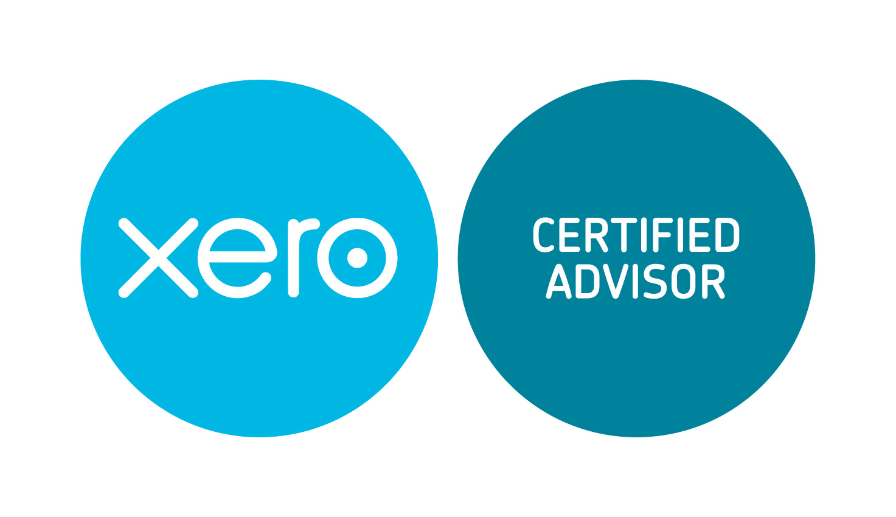

A long established accountancy firm based in Chichester, West Sussex. Proactive and reliable accounting services with a prompt and efficient response, supporting your business goals with expert, personalized advice.
Expert services for small and medium-sized businesses and private individuals across a broad spectrum of industries
Professional accounting support for small and medium-sized businesses. Accurate records, compliance, and expert financial guidance.
Corporate tax and income tax to VAT, capital gains tax and inheritance tax planning. Strategic tax advice to optimize your position.
Dedicated services for private individuals. Expert support for self-assessment tax returns and personal tax planning.
Dedicated payroll management services including Construction Industry Scheme (CIS) compliance and processing.
Professional bookkeeping services to keep your financial records accurate, up-to-date, and compliant.
Independent audit services providing assurance and verification for your financial statements.
Strategic business planning and financial forecasting to support your growth objectives and funding requirements.

We are proud to be a Xero Certified Advisor and Xero Tax Specialist, helping businesses harness the power of cloud accounting.
Xero provides real-time visibility of your business finances, accessible anywhere, anytime. We provide expert implementation, training, and ongoing support to ensure you get maximum value from the platform.
Watling and Hirst Limited is a long established accountancy firm based in Chichester, West Sussex, with over 100 years of history serving businesses and individuals across the region.
As Chartered Certified Accountants, we provide expert, proactive advice with a prompt and efficient response. We serve a diverse client base representing a broad spectrum of industries.
"Proactive and reliable with a prompt and efficient response focused on supporting your business goals."
Get in touch with Chichester's long-established Chartered Certified Accountants. Proactive, reliable service you can trust.